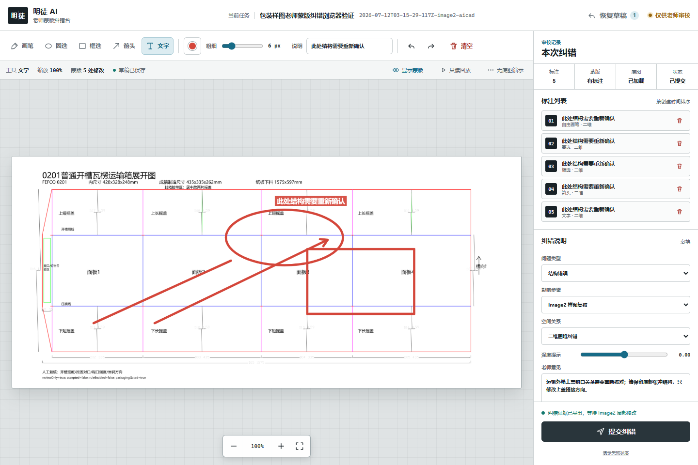
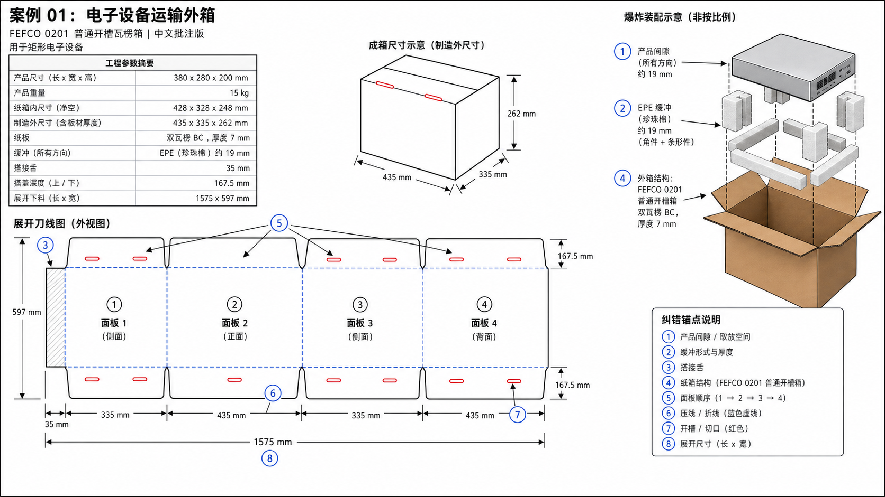
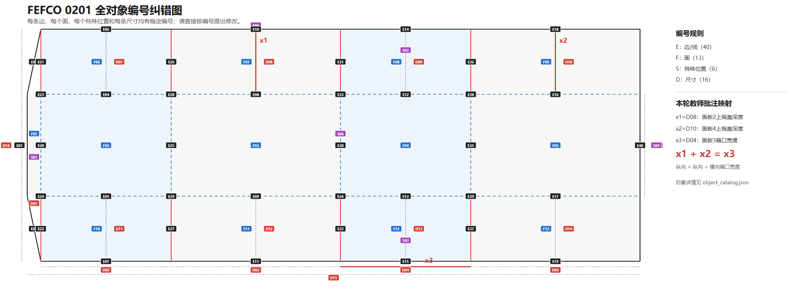
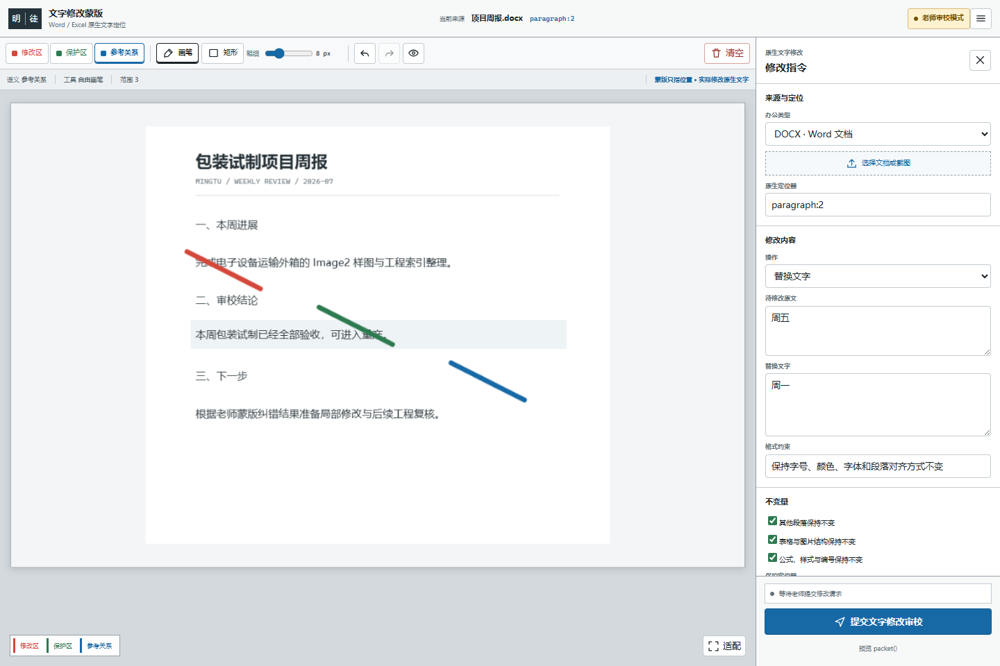
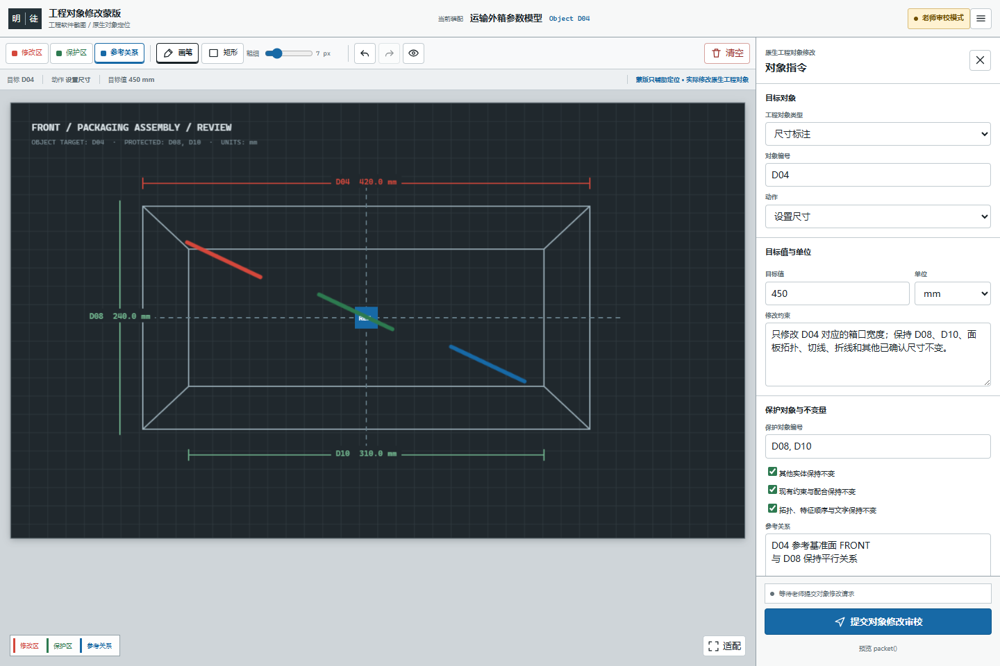
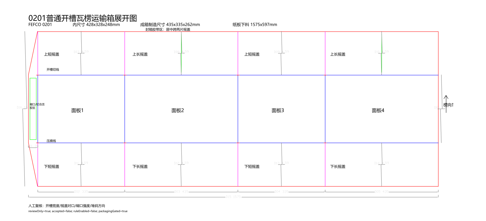

TEACHABLE · CORRECTABLE · TRACEABLE
明徒 AI
看得见成长，教得会做事。
像带教新同事一样教会 AI：先问清需求，再执行、自查、纠错和复核，把正确方法沉淀成可审核、可复用的规则。
不是一个只给答案的黑盒
人负责教与确认，AI 负责执行与改进
明徒 AI 展示目标、步骤、证据、采用规则、置信度和验证结果。用户可以用文字、示范、截图和蒙版指出错误；系统把纠错整理成默认停用的规则草稿，而不是自动扩大权限。
PACKAGING LOOP
从一句需求到可复核 CAD 的八个关口
每一步都有明确前置证据。关键数据未确认、自查未通过或老师未纠错时，状态机不会向后跳。
- 01
需求澄清
产品、尺寸、重量、材料、运输、开合和制造约束。
- 02
方案与提示词编译
结构、参数、风险和首次生成指导包。
- 03
Image2 中文样图
统一工程版式的视觉候选，不把像素当尺寸。
- 04
尺寸与形状自查
单位、拓扑、冲突、闭合、制造和文字可读性。
- 05
老师蒙版纠错
画笔、圈选、框选、箭头、文字与结构化意见。
- 06
Image2 局部修改
只改指定区域，保留未标注内容，再次复核。
- 07
AICAD 工程制图
参数真值、相对路径、证据哈希和确定性几何。
- 08
最终人工复核
候选结果进入老师或工程师审核，不自动放行。
IMAGE IS EVIDENCE
样图负责沟通，工程索引负责追问
同一个包装案例同时保留 Image2 中文样图与程序化工程索引。老师核对的是尺寸来源、对象编号和结构关系；视觉上“像是对的”不能替代工程真值。
- 01先确认视觉方向与中文表达
- 02再核对对象编号与结构定位
- 03最后进入蒙版纠错与复核回执


MINGTU REVIEW DESK
只改这个点，已经正确的内容一处不动
原工程图片蒙版保持原版；文字和工程软件分别使用两个独立工作台，不在同一页面切换。


RELEASE SCOPE
首版能力，按证据说话
展示步骤、规则、证据与复核点
默认停用，老师审核后才能复用
按场景回应，避免客服腔、假装真人和情感依赖
原图片版不变；文字与工程软件各自独立入口
段落或单元格定位；源文件和未选中部件保持不变
做出上下文决策并明确标出疑点，不静默丢规则
确定性指导包；本机专业提示词库为可选增强
依赖运行环境；视觉候选不是尺寸真值
交付前筛查，不是技术验收
确定性离线验证已实现，真实宿主需现场检查
始终属于有权限的人和组织流程
AICAD 1.2.0
视觉方案到工程几何之间，有一条严格的证据边界
确认后的尺寸、材料和纠错证据会复制到会话目录，使用相对路径和 SHA-256 生成严格请求。结果必须绑定本次请求和产物哈希，错误必须给出根因与修复建议。
- 21
- 包装规则 PKG-G001 至 PKG-G021
- 41
- AICAD 核心与回归测试
- 87
- 集成清单文件哈希

HUMAN REVIEW BOUNDARY
四道锁，防止候选结果越权
QUICK START
用验证开始，而不是用承诺开始
Node.js 22–24、npm 10+、Python 3 和 Windows PowerShell。
npm ci
npm run typecheck
npm test
npm run verify:plugin
npm run smoke:image2-prompt-optimizer
npm run smoke:packaging-workflow
npm run smoke:mask-workbench
npm run verify:aicad-integration
npm run package:codex-plugin